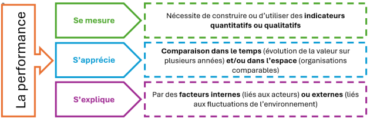
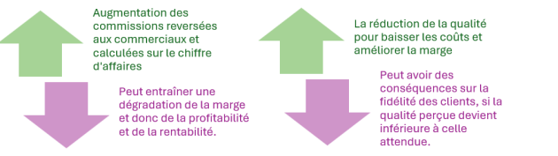

Les types de performance
La notion de performance
Définition : Performance
Degré de réalisation des objectifs d’une organisation, compte tenu de ses moyens, de son contexte et des attentes des acteurs.
Complément : La performance

Performance organisationnelle : approche organique
Performance organisationnelle selon Peter DRUCKER
Pour Peter Drucker, la performance organisationnelle ne se limite pas aux résultats financiers. Elle correspond à la capacité d’une organisation à atteindre ses objectifs, à être efficace (faire les bonnes choses) et efficiente (bien les faire), tout en assurant sa pérennité.
Selon lui :
l’entreprise a une responsabilité sociale : elle doit créer de la valeur pour la société, pas seulement pour les actionnaires ;
la performance repose sur le pilotage par objectifs, l’autonomie et la motivation des salariés (management par objectifs) ;
les ressources humaines sont la principale source de performance durable.
Définition : Efficacité et Efficience
Efficacité : degré d'atteinte des objectifs. Exemple - Efficacité maximale : tous les objectifs ont été atteints
Efficience : rapport entre les résultats obtenus et l'ensemble des moyens mis en œuvre pour les obtenir. Gain d'efficience :
Amélioration des résultats avec des moyens identiques ;
Ou même résultat avec moins de moyens
Attention : Ne pas confondre avec la productivité
Productivité = Rapport production / Facteurs de production.
Fondamental :
En résumé, pour Drucker, une organisation performante est celle qui crée une valeur globale et durable en conciliant résultats économiques, efficacité managériale et utilité sociale.
Une performance multidimensionnelle
Attention :
La performance ne se limite pas au financier.
Complément : Principaux types de performance
Commerciale : chiffre d’affaires, part de marché, fidélité.
Financière : rentabilité, profitabilité, autofinancement.
Sociale et sociétale : conditions de travail, formation, engagement.
Environnementale : émissions, énergie, déchets, biodiversité.
Texte légal : Référence réglementaire - la CSRD
CSRD signifie Corporate Sustainability Reporting Directive (Directive européenne sur le reporting de durabilité des entreprises).
La CSRD est une directive de l’Union européenne adoptée en 2022 qui renforce et remplace la NFRD.
Elle impose à certaines entreprises de publier un rapport de durabilité (ESG) structuré, fiable et comparable, intégré au rapport de gestion.
Objectif :
améliorer la transparence sur les impacts environnementaux, sociaux et de gouvernance,
lutter contre le greenwashing,
aider investisseurs, banques et parties prenantes à évaluer la durabilité des entreprises.
Une entreprise de l’UE est soumise à la CSRD si les deux critères sont réunis :
plus de 1 000 salariés, ET
chiffre d’affaires net > 450 M€
Les PME cotées sont exclues du champ obligatoire.
Une entreprises hors UE y est soumise si :
CA > 450 M€ dans l’UE,
et au moins une filiale ou succursale européenne générant > 200 M€ de CA.
Les premiers rapports sont attendus en 2029.
Texte légal : Loi AGEC
La loi AGEC (Anti-Gaspillage pour une Économie Circulaire) est une loi française adoptée en 2020. Elle vise à réduire les déchets et favoriser le recyclage.
Objectif | principales mesures | Enjeux pour les entreprises |
|---|---|---|
La loi AGEC cherche à :
|
| Les entreprises doivent :
Cela peut entraîner :
|
Lien avec la performance - la loi AGEC contribue à :
la performance environnementale
la performance sociétale
Elle incite les entreprises à adopter un comportement plus responsable
Fondamental : Développement durable
Le développement durable consiste à répondre aux besoins du présent sans compromettre la capacité des générations futures à répondre aux leurs.
Il repose sur l’équilibre entre économie, social et environnement, afin d’assurer un avenir viable pour les générations futures.
Fondamental : Greenwashing
Le greenwashing (ou écoblanchiment) consiste pour une organisation à donner une image écologique trompeuse.
L’entreprise fait croire qu’elle respecte l’environnement alors que ce n’est pas réellement le cas.
Le greenwashing vise à :
améliorer l’image de l’entreprise
attirer des clients sensibles à l’environnement
se différencier des concurrents
Les moyens utilisés
Publicités “vertes” (écologique, naturel…)
Mise en avant d’actions limitées
Informations incomplètes ou exagérées
La performance globale
Définition : Performance globale
La performance globale signifie la prise en compte simultanée des dimensions économique, sociale, sociétale et environnementale.
Complément :
Type de performance | Définition | Indicateurs clés |
|---|---|---|
COMMERCIALE | Mesure la capacité d’une organisation à atteindre ses objectifs de vente et à satisfaire ses clients. | Chiffre d’affaires : montant des ventes réalisées par l’organisation. Part de marché : Proportion des ventes de l’organisation par rapport au marché total. Fidélité des clients : Mesure de la récurrence des achats par les clients. |
FINANCIÈRE | Évalue la capacité d’une organisation à générer des profits et à assurer sa pérennité financière. | Rentabilité : Rapport entre le résultat net et les capitaux investis. Profitabilité : Capacité à dégager un résultat positif. Dividendes : Part des bénéfices distribuée aux actionnaires. Autofinancement : Capacité à financer ses investissements avec ses propres ressources. |
SOCIALE & SOCIÉTALE | Évalue l’impact des activités de l’organisation sur ses employés et la société en général. | Bilan social : Document présentant les principales données sociales de l’organisation (emploi, conditions de travail, formation, etc.). Conditions de travail : Qualité de l’environnement de travail pour les employés. Formation : Investissement de l’organisation dans le développement des compétences de ses employés. Engagement social : Initiatives de l’organisation en faveur de la société (actions caritatives, développement durable, etc.). |
ENVIRONNEMENTALE | Désigne la capacité d'une organisation à réduire son impact sur l'environnement tout en optimisant ses processus. | Émissions de CO2 : Mesure des émissions de dioxyde de carbone générées par les activités de l'organisation. Les bilans carbones et les audits énergétiques sont souvent utilisés pour évaluer ces émissions. Consommation d'eau : Quantité d'eau utilisée par l'organisation. La mise en place de capteurs intelligents permet une surveillance précise et en temps réel de la consommation d'eau. Gestion des déchets : Quantité de déchets produits et recyclés par l'organisation. La réduction des déchets et l'amélioration des pratiques de recyclage sont des aspects importants de la performance environnementale. Utilisation de l'énergie : Efficacité énergétique des processus de production et des bâtiments. L'optimisation de l'utilisation de l'énergie permet de réduire les coûts et l'impact environnemental. Préservation de la biodiversité : Actions entreprises pour protéger les écosystèmes et la biodiversité. Cela inclut la gestion des espaces naturels et la réduction des impacts négatifs sur la faune et la flore. |
Fondamental :
La création de valeur n’entraîne pas automatiquement une amélioration de toutes les dimensions de la performance.
Interdépendance et arbitrages
Principe fondamental
Les décisions de gestion impliquent des arbitrages :

Fondamental :
Il n’existe pas de situation idéale.
Outils de pilotage : tableaux de bord
Définition : Tableau de bord
Un tableau de bord est un outil regroupant des indicateurs pour suivre la performance. (KPI : Key performance Indicator)
Fondamental : Un tableau de bord permet
D’évaluer les effets des décisions prises : Il mesure de façon objective les résultats des actions engagées à l’aide d’indicateurs clés, afin de vérifier si les objectifs fixés sont atteints et d’identifier les écarts entre le prévu et le réalisé.
D’anticiper les déséquilibres et les risques : En suivant l’évolution des indicateurs dans le temps, le tableau de bord permet de détecter rapidement les dérives, tensions ou ruptures de tendances, et d’agir en amont avant que les problèmes ne s’aggravent.
De piloter les compromis et arbitrages : Il met en évidence les interactions entre différents objectifs parfois contradictoires (coût, qualité, délais, performance sociale ou environnementale), facilitant ainsi des choix éclairés et cohérents avec la stratégie globale.